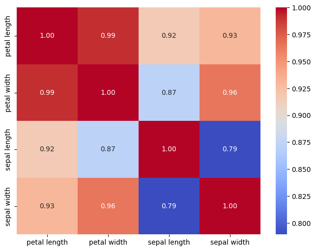
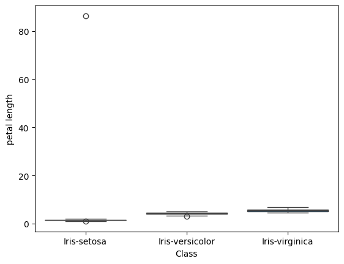
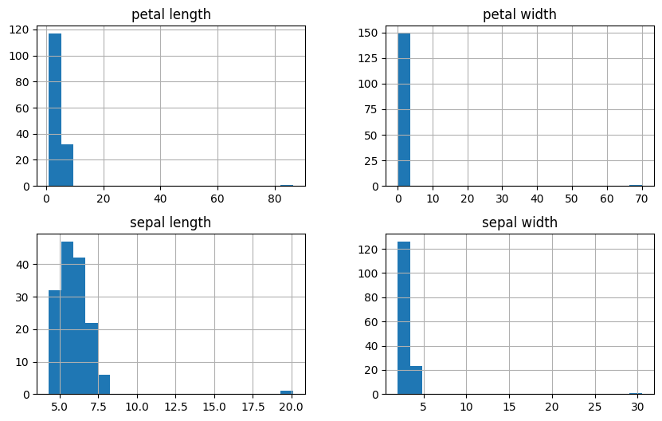
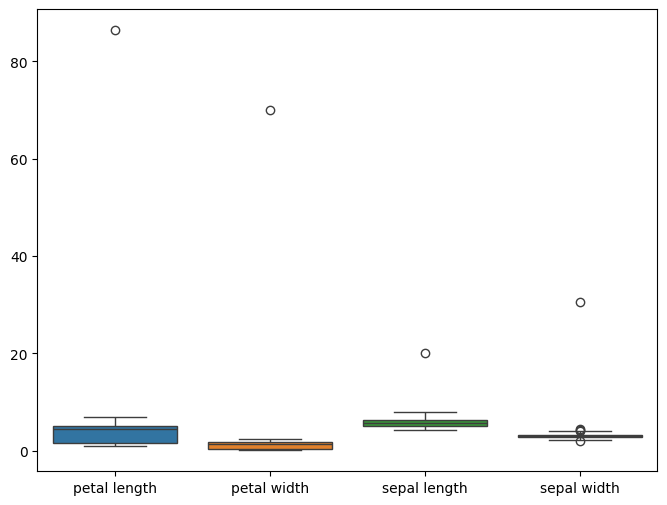
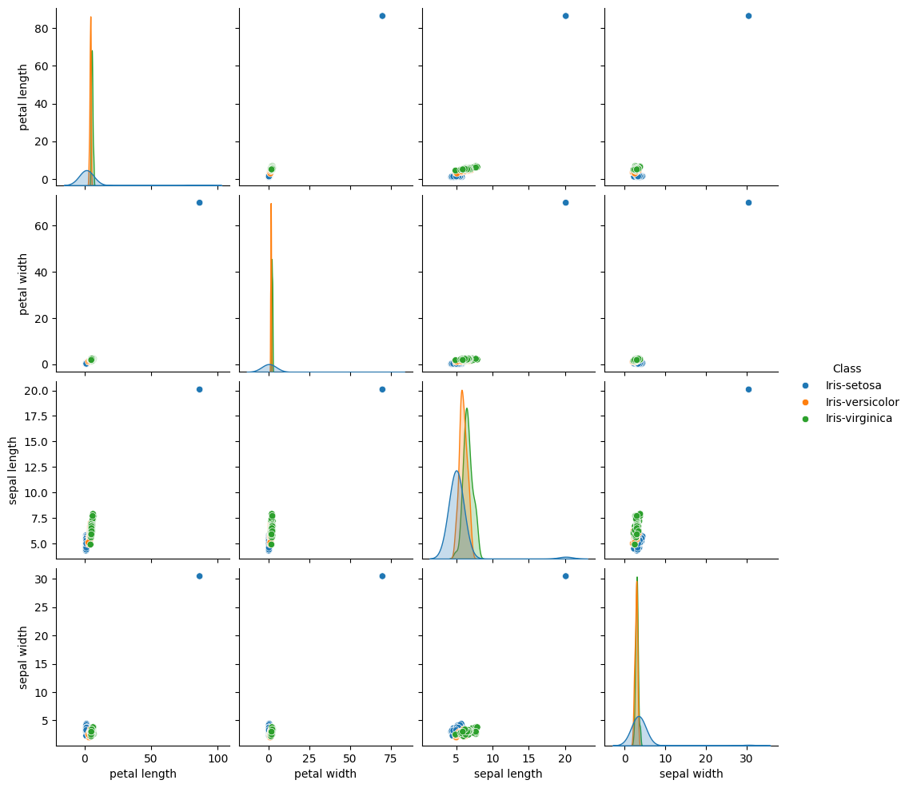

Data Understanding#
Pemahaman data merupakan tahap awal dalam proses Knowledge Discovery in Databases (KDD) atau Data Mining. Langkah ini bertujuan untuk mengeksplorasi, menyelidiki, dan menganalisis dataset agar dapat memahami struktur, isi, serta karakteristik data sebelum melakukan analisis lebih lanjut.
Pemahaman data yang baik sangat penting karena berpengaruh terhadap keberhasilan seluruh proses data mining, termasuk tahap data preparation, modeling, dan evaluation.
Tujuan Pemahaman Data#
Memahami Konteks Data – Mengenali sumber data, makna setiap variabel, serta hubungan antarvariabel dalam dataset.
Mengidentifikasi Permasalahan dalam Data – Menemukan missing values, outliers, noise, atau ketidakkonsistenan dalam data.
Menilai Kualitas Data – Memastikan bahwa data memiliki tingkat akurasi, kelengkapan, dan relevansi yang cukup untuk dianalisis.
Menentukan Arah Analisis – Berdasarkan pemahaman awal, dapat dirumuskan hipotesis serta teknik data mining yang sesuai.
Tahapan dalam Memahami Data#
Berikut adalah beberapa langkah dalam memahami data:
1. Pengumpulan Data#
Dataset IRIS adalah Dataset ini berisi informasi tentang tiga spesies bunga Iris (Setosa, Versicolor, Virginica), dengan empat fitur utama: panjang dan lebar sepal serta panjang dan lebar petal.
Lokasi Data#
Data IRIS yang digunakan berada dalam cloud data platform aiven dan Dbeaver untuk kelola database :
Data IRIS petal berada di database MySQL.
Data IRIS sepal berada di database PostgreSQL.
Metode Pengumpulan Data#
Langkah pengumpulan data dilakukan dengan Python menggunakan pustaka berikut:
pymysql → Untuk menghubungkan dan mengambil data dari MySQL.
pandas → Untuk membaca dan mengolah data setelah diambil dari database.
psycopg2-binary → Untuk menghubungkan dan mengambil data dari PostgreSQL.
sqlalchemy → Untuk membuat koneksi database yang lebih stabil dan kompatibel dengan
pandas.read_sql().python-dotenv → Untuk menyimpan kredensial database dalam file
.envagar lebih aman dan tidak perlu hardcoding dalam kode Python.
Cara Mengumpulkan Data#
1.1 Menghubungkan ke MySQL dan PostgreSQL#
Install library python yang diperlukan
!pip install pymysql
!pip install pandas
!pip install psycopg2-binary
!pip install sqlalchemy
!pip install python-dotenv
Requirement already satisfied: pymysql in /usr/local/python/3.12.1/lib/python3.12/site-packages (1.1.1)
[notice] A new release of pip is available: 24.3.1 -> 25.1.1
[notice] To update, run: python3 -m pip install --upgrade pip
Requirement already satisfied: pandas in /home/codespace/.local/lib/python3.12/site-packages (2.2.3)
Requirement already satisfied: numpy>=1.26.0 in /home/codespace/.local/lib/python3.12/site-packages (from pandas) (2.2.0)
Requirement already satisfied: python-dateutil>=2.8.2 in /home/codespace/.local/lib/python3.12/site-packages (from pandas) (2.9.0.post0)
Requirement already satisfied: pytz>=2020.1 in /home/codespace/.local/lib/python3.12/site-packages (from pandas) (2024.2)
Requirement already satisfied: tzdata>=2022.7 in /home/codespace/.local/lib/python3.12/site-packages (from pandas) (2024.2)
Requirement already satisfied: six>=1.5 in /home/codespace/.local/lib/python3.12/site-packages (from python-dateutil>=2.8.2->pandas) (1.17.0)
[notice] A new release of pip is available: 24.3.1 -> 25.1.1
[notice] To update, run: python3 -m pip install --upgrade pip
Requirement already satisfied: psycopg2-binary in /usr/local/python/3.12.1/lib/python3.12/site-packages (2.9.10)
[notice] A new release of pip is available: 24.3.1 -> 25.1.1
[notice] To update, run: python3 -m pip install --upgrade pip
Requirement already satisfied: sqlalchemy in /usr/local/python/3.12.1/lib/python3.12/site-packages (2.0.38)
Requirement already satisfied: greenlet!=0.4.17 in /usr/local/python/3.12.1/lib/python3.12/site-packages (from sqlalchemy) (3.1.1)
Requirement already satisfied: typing-extensions>=4.6.0 in /home/codespace/.local/lib/python3.12/site-packages (from sqlalchemy) (4.12.2)
[notice] A new release of pip is available: 24.3.1 -> 25.1.1
[notice] To update, run: python3 -m pip install --upgrade pip
Requirement already satisfied: python-dotenv in /usr/local/python/3.12.1/lib/python3.12/site-packages (1.0.1)
[notice] A new release of pip is available: 24.3.1 -> 25.1.1
[notice] To update, run: python3 -m pip install --upgrade pip
buat file env untuk koneksi database di aiven anda.
Sesuaikan seperti format dibawah ini:
# Database MySQL
MYSQL_HOST=<HOSTNAME>
MYSQL_USER=<USERNAME>
MYSQL_PASSWORD=<PASSWORD>
MYSQL_PORT=<PORT>
MYSQL_DATABASE=<DATABASE_NAME>
# Database PostgreSQL
PG_HOST=<HOSTNAME>
PG_USER=<USERNAME>
PG_PASSWORD=<PASSWORD>
PG_PORT=<PORT>
PG_DATABASE=<DATABASE_NAME>
Upload env:
from google.colab import files
uploaded = files.upload()
---------------------------------------------------------------------------
ModuleNotFoundError Traceback (most recent call last)
Cell In[2], line 1
----> 1 from google.colab import files
2 uploaded = files.upload()
ModuleNotFoundError: No module named 'google'
koneksikan database di aiven
import pandas as pd
from sqlalchemy import create_engine
import os
from dotenv import load_dotenv
load_dotenv()
# Ambil variabel koneksi dari lingkungan
MYSQL_HOST = os.getenv("MYSQL_HOST")
MYSQL_PORT = os.getenv("MYSQL_PORT")
MYSQL_USER = os.getenv("MYSQL_USER")
MYSQL_PASSWORD = os.getenv("MYSQL_PASSWORD")
MYSQL_DATABASE = os.getenv("MYSQL_DATABASE")
PG_HOST = os.getenv("PG_HOST")
PG_PORT = os.getenv("PG_PORT")
PG_USER = os.getenv("PG_USER")
PG_PASSWORD = os.getenv("PG_PASSWORD")
PG_DATABASE = os.getenv("PG_DATABASE")
# Gunakan SQLAlchemy untuk koneksi ke MySQL
mysql_engine = create_engine(f"mysql+pymysql://{MYSQL_USER}:{MYSQL_PASSWORD}@{MYSQL_HOST}:{MYSQL_PORT}/{MYSQL_DATABASE}")
# Gunakan SQLAlchemy untuk koneksi ke PostgreSQL
pg_engine = create_engine(f"postgresql+psycopg2://{PG_USER}:{PG_PASSWORD}@{PG_HOST}:{PG_PORT}/{PG_DATABASE}")
1.2 Mengambil dan menampilkan data#
try:
# Query MySQL
mysql_query = "SELECT * FROM petal_data;"
df_mysql = pd.read_sql(mysql_query, mysql_engine)
# Query PostgreSQL
pg_query = "SELECT * FROM sepal_data;"
df_postgres = pd.read_sql(pg_query, pg_engine)
# Print hasil query
print("Data dari MySQL:")
print(df_mysql.to_string())
print("\nData dari PostgreSQL:")
print(df_postgres.to_string())
# Jika data berhasil diambil, hapus file .env
if os.path.exists(".env"):
os.remove(".env")
except Exception as e:
print(f"Gagal mengambil data: {e}")
Data dari MySQL:
id Class petal length petal width
0 1 Iris-setosa 86.4 70.0
1 2 Iris-setosa 1.4 0.2
2 3 Iris-setosa 1.3 0.2
3 4 Iris-setosa 1.5 0.2
4 5 Iris-setosa 1.4 0.2
Data dari PostgreSQL:
id Class sepal length sepal width
0 2 Iris-setosa 4.9 3.0
1 3 Iris-setosa 4.7 3.2
2 4 Iris-setosa 4.6 3.1
3 5 Iris-setosa 5.0 3.6
4 6 Iris-setosa 5.4 3.9
3. Menggabungkan Data dari Kedua Database#
# Menggabungkan data dari MySQL (df_mysql) dan PostgreSQL (df_postgres) berdasarkan kolom 'id'
df_combined = pd.merge(
df_mysql, # Data dari MySQL yang berisi informasi petal
df_postgres.drop(columns=['Class']), # Menghapus kolom 'Class' dari df_postgres sebelum penggabungan
on="id", # Menggabungkan berdasarkan kolom 'id' yang harus ada di kedua dataframe
how="inner" # Menggunakan inner join, hanya menyertakan data dengan 'id' yang ada di kedua tabel
)
# Menampilkan hasil penggabungan
print("\nData gabungan:")
print(df_combined.to_string())
Data gabungan:
id Class petal length petal width sepal length sepal width
0 1 Iris-setosa 86.4 70.0 20.1 30.5
1 2 Iris-setosa 1.4 0.2 4.9 3.0
2 3 Iris-setosa 1.3 0.2 4.7 3.2
3 4 Iris-setosa 1.5 0.2 4.6 3.1
4 5 Iris-setosa 1.4 0.2 5.0 3.6
.. ... ... ... ... ... ...
145 146 Iris-virginica 5.2 2.3 6.7 3.0
146 147 Iris-virginica 5.0 1.9 6.3 2.5
147 148 Iris-virginica 5.2 2.0 6.5 3.0
148 149 Iris-virginica 5.4 2.3 6.2 3.4
149 150 Iris-virginica 5.1 1.8 5.9 3.0
[150 rows x 6 columns]
2. Profiling data#
Profiling data adalah langkah penting dalam memahami karakteristik dataset sebelum melakukan analisis lebih lanjut.
Ringkasan variabel dalam dataset#
Menampilkan Informasi Dataset
# Menampilkan informasi struktur DataFrame setelah penggabungan
print(df_combined.info()) # Menampilkan jumlah baris, kolom, tipe data, dan jumlah nilai non-null di setiap kolom
<class 'pandas.core.frame.DataFrame'>
RangeIndex: 150 entries, 0 to 149
Data columns (total 6 columns):
# Column Non-Null Count Dtype
--- ------ -------------- -----
0 id 150 non-null int64
1 Class 150 non-null object
2 petal length 150 non-null float64
3 petal width 150 non-null float64
4 sepal length 150 non-null float64
5 sepal width 150 non-null float64
dtypes: float64(4), int64(1), object(1)
memory usage: 7.2+ KB
None
Total data: 150 baris, 6 kolom
Kolom & tipe data:
id→ int64 (bilangan bulat)Class→ object (kategori)petal length,petal width,sepal length,sepal width→ float64 (angka desimal)
Tidak ada nilai kosong (150 non-null untuk semua kolom)
Menampilkan Ringkasan Statistik untuk Variabel Numerik
# Menampilkan statistik deskriptif untuk semua kolom numerik, kecuali 'id'
print(df_combined.drop(columns=['id']).describe())
petal length petal width sepal length sepal width
count 150.000000 150.00000 150.000000 150.000000
mean 4.325333 1.66400 5.943333 3.234000
std 6.970563 5.66807 1.426895 2.282464
min 1.000000 0.10000 4.300000 2.000000
25% 1.600000 0.30000 5.100000 2.800000
50% 4.400000 1.30000 5.800000 3.000000
75% 5.100000 1.80000 6.400000 3.300000
max 86.400000 70.00000 20.100000 30.500000
Penjelasan Statistik Deskriptif:
Total data: 150 sampel
Nilai rata-rata (mean):
petal length: 4.33, petal width: 1.66
sepal length: 5.94, sepal width: 3.23
Standar deviasi (std) → Menunjukkan sebaran data
petal width & sepal width memiliki nilai std tinggi, menunjukkan variasi besar
Nilai minimum (min) & maksimum (max)
petal length mencapai 86.4, sepal length 20.1, sepal width 30.5
Kuartil (25%, 50%, 75%)
50% (median) menunjukkan distribusi tengah dari dataset
Menampilkan Statistik untuk Variabel Kategorikal
# Menampilkan jumlah sampel untuk setiap kategori di kolom 'Class'
print(df_combined['Class'].value_counts())
Class
Iris-setosa 50
Iris-versicolor 50
Iris-virginica 50
Name: count, dtype: int64
Penjelasan Distribusi Kelas:
Dataset memiliki 3 kelas (spesies bunga Iris):
Iris-setosa → 50 sampel
Iris-versicolor → 50 sampel
Iris-virginica → 50 sampel
Distribusi kelas seimbang (masing-masing 50 sampel)
3. Korelasi dan asosiasi#
Memahami hubungan antar variabel#
Menghitung Korelasi Antar Variabel Numerik
# Menghitung korelasi antar fitur numerik dengan metode Pearson
# Kolom 'id' dan 'Class' dihapus karena 'id' bukan fitur numerik yang relevan
df_corr = df_combined.drop(columns=['id', 'Class']).corr()
# Menampilkan matriks korelasi
print(df_corr)
petal length petal width sepal length sepal width
petal length 1.000000 0.991532 0.916142 0.930563
petal width 0.991532 1.000000 0.871461 0.964198
sepal length 0.916142 0.871461 1.000000 0.789396
sepal width 0.930563 0.964198 0.789396 1.000000
Penjelasan Korelasi Antar Fitur:
Nilai korelasi berkisar antara -1 hingga 1:
Mendekati 1 → Hubungan positif kuat (saling meningkat)
Mendekati -1 → Hubungan negatif kuat (satu naik, yang lain turun)
Mendekati 0 → Tidak ada hubungan
Analisis Korelasi:
petal length & petal width → Korelasi sangat kuat (0.99) → Jika panjang kelopak besar, lebarnya juga besar
sepal length & petal length → Korelasi tinggi (0.91) → Panjang sepal cenderung meningkat seiring panjang petal
sepal width & petal width → Korelasi kuat (0.96) → Lebar sepal berhubungan erat dengan lebar petal
Visualisasi:
# Import library untuk visualisasi
import seaborn as sns
import matplotlib.pyplot as plt
# Membuat figure dengan ukuran 8x6
plt.figure(figsize=(8,6))
# Membuat heatmap untuk menampilkan korelasi antar fitur
# annot=True → Menampilkan nilai korelasi di dalam setiap sel
# cmap='coolwarm' → Menggunakan skema warna merah-biru untuk membedakan korelasi positif dan negatif
# fmt=".2f" → Menampilkan angka dengan dua desimal
sns.heatmap(df_corr, annot=True, cmap='coolwarm', fmt=".2f")
# Menampilkan heatmap
plt.show()

Statistik Deskriptif Per Class
# Menghitung rata-rata setiap fitur numerik berdasarkan kelas ('Class')
# Kolom 'id' dihapus karena tidak relevan dalam perhitungan rata-rata
df_mean = df_combined.drop(columns=['id']).groupby('Class').mean()
# Menampilkan hasil rata-rata per kelas
print(df_mean)
petal length petal width sepal length sepal width
Class
Iris-setosa 3.164 1.640 5.306 3.958
Iris-versicolor 4.260 1.326 5.936 2.770
Iris-virginica 5.552 2.026 6.588 2.974
Rata-rata Fitur Berdasarkan Kelas (Spesies Bunga Iris):
Iris-setosa → Petal lebih pendek dan sepal lebih lebar dibandingkan spesies lain.
Iris-versicolor → Ukuran petal dan sepal berada di antara Setosa & Virginica.
Iris-virginica → Petal & sepal paling panjang dan lebar, menunjukkan ukuran terbesar.
Visualisasi:
# Membuat boxplot untuk melihat distribusi 'petal length' berdasarkan kelas ('Class')
sns.boxplot(x="Class", y="petal length", data=df_combined)
# Menampilkan plot
plt.show()

4. Eksplorasi Data#
Eksplorasi data bertujuan untuk memahami distribusi variabel, hubungan antar fitur, serta mendeteksi masalah seperti outliers atau missing values.
1. Distribusi Data Numerik#
Menggunakan Histogram untuk melihat sebaran nilai dari setiap fitur numerik.
# Membuat histogram untuk semua kolom kecuali 'id'
# figsize=(10, 6) → Menentukan ukuran figure
# bins=20 → Membagi data ke dalam 20 interval
df_combined.loc[:, df_combined.columns != 'id'].hist(figsize=(10, 6), bins=20)
# Menampilkan histogram
plt.show()

Histogram ini menunjukkan adanya nilai outlier yang signifikan dalam dataset:
Petal length memiliki nilai yang mencapai >80, padahal seharusnya di bawah 7.
Petal width mencapai >70, yang tidak wajar dibandingkan dengan data normal.
Sepal length dan sepal width juga memiliki nilai ekstrem yang tidak biasa.
2. Distribusi Data tiap kategori#
Menggunakan box plot untuk melihat tiap kategori.
# Membuat figure dengan ukuran 8x6
plt.figure(figsize=(8,6))
# Membuat boxplot untuk melihat distribusi dan outlier pada semua fitur numerik
# Kolom 'id' dihapus karena tidak relevan dalam analisis
sns.boxplot(data=df_combined.loc[:, df_combined.columns != 'id'])
# Menampilkan plot
plt.show()

Boxplot ini menunjukkan adanya outlier ekstrem di dataset:
Petal length memiliki nilai yang mencapai >80, yang jauh dari distribusi normal.
Petal width, sepal length, dan sepal width juga memiliki outlier yang signifikan.
3. Hubungan Antar Variabel#
Scatter plot membantu melihat hubungan antara dua variabel numerik.
# Membuat pairplot untuk melihat hubungan antar fitur numerik berdasarkan kelas ('Class')
# Kolom 'id' dihapus karena tidak relevan dalam analisis
sns.pairplot(df_combined.drop(columns=["id"]), hue="Class")
# Menampilkan plot
plt.show()

Scatter plot matrix ini menunjukkan adanya outlier ekstrem:
🔹 Outlier Ekstrem
Ada beberapa titik data yang jauh dari kumpulan data lainnya, terutama pada petal length, petal width, sepal length, dan sepal width.
Titik-titik ini tampaknya tidak wajar untuk dataset Iris, sehingga kemungkinan besar merupakan kesalahan data atau pencatatan.
5. Identifikasi masalah#
deteksi missing value
# Mengecek jumlah missing value di setiap kolom
missing_values = df_combined.isnull().sum()
# Menampilkan hasil jika ada missing value
print("Jumlah Missing Value per Kolom:\n", missing_values)
Jumlah Missing Value per Kolom:
id 0
Class 0
petal length 0
petal width 0
sepal length 0
sepal width 0
dtype: int64
Deteksi outlier
# Menentukan Q1 (25%) dan Q3 (75%)
Q1 = df_combined.drop(columns=['id', 'Class']).quantile(0.25)
Q3 = df_combined.drop(columns=['id', 'Class']).quantile(0.75)
IQR = Q3 - Q1
# Menentukan batas bawah dan atas untuk outlier
lower_bound = Q1 - 1.5 * IQR
upper_bound = Q3 + 1.5 * IQR
# Menandai outlier (True jika di luar batas)
outliers = ((df_combined.drop(columns=['id', 'Class']) < lower_bound) |
(df_combined.drop(columns=['id', 'Class']) > upper_bound))
# Menampilkan jumlah outlier per kolom
print("Jumlah Outlier per Kolom:\n", outliers.sum())
Jumlah Outlier per Kolom:
petal length 1
petal width 1
sepal length 1
sepal width 5
dtype: int64